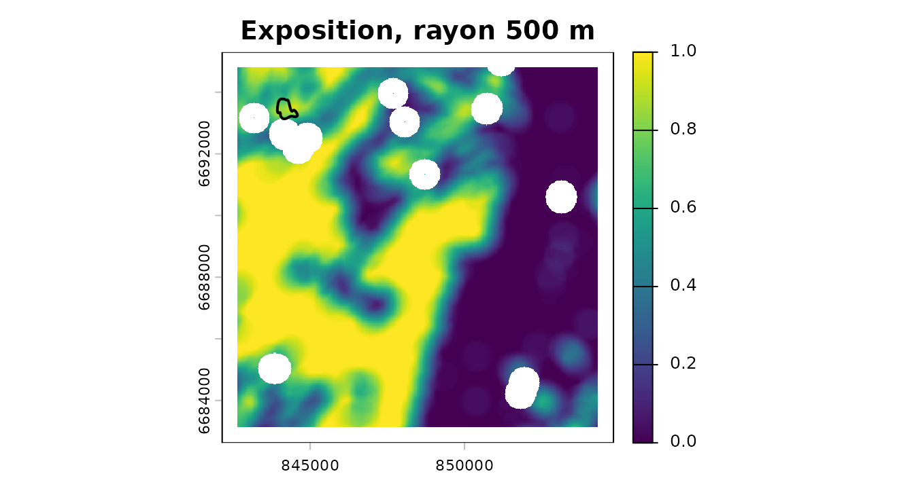

Couchey : la chaîne sur données réelles, hors de son terrain de conception
Source:vignettes/couchey.Rmd
couchey.RmdLa vignette principale déroule la
chaîne sur un paysage inventé. Celle-ci la déroule sur des
données réelles — BD Forêt v2, CORINE et surfaces
brûlées EFFIS — autour de Couchey, en Côte-d’Or, qui
est le territoire de référence du projet voisin
nemetonshiny.
Le choix n’est pas neutre, et c’est l’intérêt. Couchey est l’inverse du terrain pour lequel ce package a été conçu : chênaie, hêtraie et charmaie de plaine bourguignonne, avec des vignes là où un exemple varois aurait de la garrigue. Plusieurs valeurs par défaut y sont visiblement moins à leur place, et la vignette le montre plutôt que de choisir un terrain complaisant.
Les données
L’extrait est livré avec le package et lu depuis le disque. Il a été
constitué le 2026-08-16 par
data-raw/build_couchey_extract.R, qui contacte les services
réels ; l’article, lui, ne touche pas au réseau, pour la même raison que
les tests : une documentation rouge ne doit pas être un bulletin de
disponibilité de l’IGN.
gpkg <- system.file("extdata", "couchey.gpkg", package = "firexpovulnR")
st_layers(gpkg)$name
#> [1] "commune" "study_area" "bdforet_v2"
#> [4] "clc_2018" "burnt_areas" "millesime_candidates"
commune <- st_read(gpkg, "commune", quiet = TRUE)
study <- st_read(gpkg, "study_area", quiet = TRUE)
bdforet <- st_read(gpkg, "bdforet_v2", quiet = TRUE)
corine <- st_read(gpkg, "clc_2018", quiet = TRUE)
feux <- st_read(gpkg, "burnt_areas", quiet = TRUE)
commune[, c("nom", "insee")]
#> Simple feature collection with 1 feature and 2 fields
#> Geometry type: MULTIPOLYGON
#> Dimension: XY
#> Bounding box: xmin: 843661.7 ymin: 6684136 xmax: 853302.7 ymax: 6688423
#> Projected CRS: RGF93 v1 / Lambert-93
#> nom insee geom
#> 1 Couchey 21200 MULTIPOLYGON (((852938.9 66...
round(as.numeric(st_area(study)) / 1e6, 1) # km2
#> [1] 159.8Ce qu’on y trouve, en vrai :
sort(table(bdforet$code_tfv), decreasing = TRUE)[1:6]
#>
#> FF1-00-00 FF1-00 FF31 FF1G01-01 FF2G53-53 FO1
#> 123 74 62 52 50 46
sort(table(corine$code_18), decreasing = TRUE)[1:6]
#>
#> 211 311 312 112 321 121
#> 13 13 13 10 8 6Aucun pin d’Alep, aucun chêne vert, aucune lande. Du mélange de
feuillus (FF1-00-00), du chêne décidu
(FF1G01-01), du hêtre (FF1-09-09) — et en
CORINE, du 221, c’est-à-dire des vignes,
sur la Côte.
Le millésime, et pourquoi il reste ambigu ici
Le package sait maintenant retrouver le millésime de la BD Forêt v2 : l’IGN le définit comme la date de prise de vue de la BD ORTHO sur laquelle elle a été photo-interprétée. Sur Couchey, cela donne ceci :
mil <- st_drop_geometry(st_read(gpkg, "millesime_candidates", quiet = TRUE))
mil[, c("dep", "pva", "date_vol", "year", "pct_area")]
#> dep pva date_vol year pct_area
#> 1 21 2010 2010-07-07 2010 49.9
#> 2 21 2014 2014-07-17 2014 50.1Deux campagnes, 2010 et 2014, à cinquante-cinquante de la surface. C’est le cas d’école de ce que la fonction refuse de trancher : l’IGN ne publie pas laquelle a alimenté la production de la Côte-d’Or, et rien dans la donnée ne le dit. On garde les deux en tête — la section validation y revient, parce que l’écart entre les deux change la conclusion.
millesime_prudent <- min(mil$year) # ce que fait strategy = "oldest"
millesime_prudent
#> [1] 2010Combustible
primaire <- fev_fuel_source(bdforet, type = "bdforet_v2", res = 25,
aoi = study, millesime = millesime_prudent)
auxiliaire <- fev_fuel_source(corine, type = "clc_2018", res = 25,
aoi = study, millesime = 2018)
fuel <- fev_fuel_merge(primaire, auxiliaire)
#> "clc_2018" filled 145098 cells (56.4%) that
#> "bdforet_v2" left unmapped.
fuel
#>
#> ── fev_fuel_source: bdforet_v2+clc_2018 ────────────────────────────────────────
#> • Millesime: bdforet_v2 2010, clc_2018 2018
#> • Registers: "categorical"
#> • Categorical: 507 x 507 cells at 25 EPSG:2154, 41 classes
#> • Per-pixel source: "bdforet_v2" and "clc_2018"
#> • Lookup: 76 rows, 21 flagged ambiguous
#>
#> Provenance: 2 sources, 3 steps.La couche de provenance par pixel dit ce que chaque source apporte :
src <- fev_fuel_categorical(fuel)[["source"]]
lv <- terra::levels(src)[[1]]
tab <- table(lv$class[match(terra::values(src)[, 1], lv$id)])
round(100 * tab / sum(tab), 1)
#>
#> bdforet_v2 clc_2018
#> 43.5 56.5
head(summary(fuel)$classes, 8)
#> class cells pct fuel_type burnable
#> 28 211 59255 23.05 cropland FALSE
#> 3 FF1-00-00 44629 17.36 broadleaf_closed TRUE
#> 22 112 36328 14.13 non_fuel FALSE
#> 6 FF1G01-01 21009 8.17 broadleaf_closed TRUE
#> 23 121 12419 4.83 non_fuel FALSE
#> 29 221 11938 4.64 cropland FALSE
#> 4 FF1-09-09 11281 4.39 broadleaf_closed TRUE
#> 12 FF2G53-53 10968 4.27 conifer_closed TRUEOù les défauts du package sont mal à l’aise
ft <- fev_fuel_type(fuel)
freq <- terra::freq(fev_data(ft))
freq[order(-freq$count), c("value", "count")]
#> value count
#> 1 broadleaf_closed 82751
#> 5 cropland 79437
#> 10 non_fuel 55534
#> 3 conifer_closed 14603
#> 7 mixed_closed 9982
#> 2 broadleaf_open 4149
#> 6 grassland 2942
#> 15 urban_vegetation 2405
#> 8 mixed_open 2137
#> 12 shrubland 1103
#> 14 unstocked 685
#> 4 conifer_open 553
#> 13 transitional_shrub 333
#> 9 mosaic_agri_natural 213
#> 11 poplar_plantation 199Le peuplement dominant est du feuillu fermé, auquel
fev_fuel_weights() attribue 0,60 — contre
0,95 pour le conifère fermé et 1,00 pour le maquis. Ces poids sont une
convention du package, pas une mesure, et ils ont été ordonnés en
pensant au pourtour méditerranéen. Sur une chênaie bourguignonne ils
disent surtout « moins inflammable que du pin d’Alep », ce qui est vrai
et peu informatif.
Et les vignes, classées non brûlables :
clc_lookup <- fev_fuel_lookup("clc")
clc_lookup[clc_lookup$code == "221", c("code", "label", "burnable", "confidence")]
#> code label burnable confidence
#> 15 221 Vineyards FALSE ambiguousC’est l’une des sept lignes agricoles marquées
ambiguous. Sur la Côte, une vigne travaillée est
effectivement un pare-feu ; l’hypothèse tient. Elle tiendrait moins bien
sur des terrasses abandonnées.
brulable <- fev_fuel_binary(fuel)
par(mar = c(2, 2, 2, 4))
plot(fev_data(brulable), main = "Combustible brûlable — Couchey et alentours")
plot(st_geometry(commune), add = TRUE, border = "white", lwd = 2)
plot(st_geometry(feux), add = TRUE, border = "black", lwd = 2)
Le trait blanc est la commune, le trait noir l’incendie de 2020.
Exposition
expo <- fev_exposure(brulable, radius = 500, type = "ember", quiet = TRUE)
terra::global(fev_data(expo), c("mean", "max"), na.rm = TRUE)
#> mean max
#> exposure 0.4875536 1
par(mar = c(2, 2, 2, 4))
plot(fev_data(expo), main = "Exposition, rayon 500 m")
plot(st_geometry(feux), add = TRUE, border = "black", lwd = 2)
Le rayon de 500 m vient de travaux albertains, validés depuis au Portugal. Sur une mosaïque bourguignonne de bois, cultures et vignes, il n’est validé nulle part — moins encore qu’en Provence, où au moins le type de combustible se rapproche de l’ibérique.
Danger météorologique — le seul ingrédient inventé
Le produit historique CEMS demande un jeton Copernicus personnel, que le package s’interdit de manipuler. La série ci-dessous est donc synthétique, et c’est la seule chose de cette page qui ne soit pas une donnée réelle.
meteo <- rast(nrows = 4, ncols = 4, extent = ext(vect(study)),
crs = "EPSG:2154", nlyr = 730)
values(meteo) <- matrix(abs(rnorm(16 * 730, mean = 9, sd = 7)), nrow = 16)
time(meteo) <- seq(as.Date("2019-01-01"), by = "day", length.out = 730)
danger_pct <- fev_fwi_percentile(meteo, ref_period = c(2019, 2020))Une remarque qui n’est pas de décor : sur un FWI bourguignon, les seuils absolus EFFIS placeraient presque tout en classe basse toute l’année. C’est exactement ce que la calibration en percentiles corrige — un 98e percentile veut dire « journée exceptionnelle ici », que l’ici soit la Côte ou les Maures.
Alignement, vulnérabilité, risque
dernier <- fev_data(danger_pct)[[terra::nlyr(fev_data(danger_pct))]]
dispo <- fev_fuel_availability(fuel, weights = fev_fuel_weights(quiet = TRUE))
pile <- fev_align(danger = dernier, disponibilite = fev_data(dispo),
exposition = fev_data(expo))
#> Warning: Aligning layers whose cell sizes differ by a factor of 126.4.
#> ℹ Finest "disponibilite" at 25; coarsest "danger" at 3160.2.
#> ℹ Target grid: 25 (finest).
#> ℹ Each coarse cell is copied across about 16000 fine cells. That adds
#> resolution, not information.
#> ℹ The ratio is recorded in the provenance.Le rapport d’échelle est ici modeste — la grille météo synthétique est grossière mais pas kilométrique — et il part quand même dans la provenance.
batî <- rast(pile$exposition)
values(batî) <- 0
batî <- terra::rasterize(vect(commune), batî, field = 1, background = 0)
vuln <- fev_vuln_stack(
humaine = fev_vuln_layer(batî, method = "minmax", name = "commune"),
forestiere = fev_vuln_layer(pile$exposition, method = "percentile_rank",
name = "expo"),
weights = c(0.5, 0.5)
)
#> Warning: "minmax" normalisation rescales on this extent's own range.
#> ℹ Observed range 0 and 1. The same cell scores differently under a different
#> AOI, so vulnerability layers are not comparable between study areas.
#> ℹ Shown once per session; recorded in the provenance every time.
danger <- fev_danger_index(pile$danger, pile$disponibilite,
normalise = "percentile")
risque <- fev_risk(danger, vuln, normalise = "none")
par(mar = c(2, 2, 2, 4))
plot(fev_data(risque), main = "Risque composite (effis_mean)")
plot(st_geometry(commune), add = TRUE, border = "white", lwd = 2)
plot(st_geometry(feux), add = TRUE, border = "black", lwd = 2)
Validation — et la conclusion honnête
st_drop_geometry(feux)[, c("fire_date", "fire_year", "area_ha")]
#> fire_date fire_year area_ha
#> 1 2020-07-31 2020 26Un seul incendie. EFFIS ne cartographie que les feux d’une trentaine d’hectares et plus, et la Bourgogne en produit peu : sur 160 km² et neuf années, l’endpoint public en sert un, de 26 ha, le 31 juillet 2020.
val <- fev_validate(risque, feux, millesime = millesime_prudent)
val$temporal$table
#> lag_years n_fires area_ha pct_area
#> 1 <= 0 (fire before the vintage) 0 0 0
#> 2 1 to 5 0 0 0
#> 3 > 5 1 26 100Le feu de 2020 postdate le millésime prudent de dix ans. Avec l’autre candidat, 2014, il le postdate encore de six. Dans les deux cas, l’écart dépasse le seuil par défaut de cinq ans, et le filtrage ne laisse rien :
fev_validate(risque, feux, millesime = millesime_prudent, max_lag_years = 5)
#> Warning: 100% of the burnt area in this sample postdates the fuel vintage (2010) by more
#> than 5 years.
#> ℹ 1 of 1 fire. Those burnt a landscape the fuel layer does not describe.
#> ℹ They are dropped, on your `max_lag_years`.
#> Error in `fev_validate()`:
#> ! No fire is left after the temporal filter.
#> ℹ `max_lag_years` = 5 against a vintage of 2010 removed all 1 of them.
#> ℹ Either the fuel data long predates the fire record, or the vintage is wrong.C’est le résultat, et il est bon qu’il ressemble à un échec. La conclusion n’est pas « la carte a un AUC de tant » — c’est cette carte ne peut pas être validée avec cette donnée :
- un seul feu ne valide rien, quel que soit l’AUC calculé dessus ;
- il a brûlé dix ans après la photographie aérienne sur laquelle repose la couche de combustible, dans un paysage que celle-ci ne décrit plus ;
- et l’ambiguïté 2010/2014 fait varier cet écart de quatre ans sans qu’on puisse la lever.
Un package qui rendrait ici un AUC de 0,73 sans rien dire d’autre serait plus agréable et moins utile.
val$auc
#> [1] 0.5827183
val$classes[, c("class", "pct_of_area", "pct_of_burnt", "ratio")]
#> class pct_of_area pct_of_burnt ratio
#> 1 0 - 0.2 49.15 1.98 0.04
#> 2 0.2 - 0.4 31.41 98.02 3.12
#> 3 0.4 - 0.6 17.25 0.00 0.00
#> 4 0.6 - 0.8 2.10 0.00 0.00
#> 5 0.8 - 1 0.10 0.00 0.00Le chiffre existe, il est dans l’objet, et il n’a pas de valeur probante ici. Il est montré pour que ce soit dit explicitement plutôt que par omission.
Ce que cet exemple apprend
Le package tourne de bout en bout sur un territoire pour lequel il n’a pas été conçu, sans rien casser — et c’est précisément parce qu’il ne cache pas ses hypothèses qu’on peut voir lesquelles ne tiennent plus :
| Ce qui tient | Ce qui tient moins |
|---|---|
| La chaîne, les grilles, la provenance | Les poids de disponibilité, ordonnés pour le méditerranéen |
| La récupération du millésime | Son ambiguïté, ici à 50/50 entre deux campagnes |
| La calibration en percentiles, qui rend le FWI comparable | Les seuils FWI absolus, peu discriminants en Bourgogne |
| Le contrôle de biais temporel, qui fait son travail | Le rayon de 500 m, validé ni ici ni ailleurs sur ce combustible |
| Les vignes non brûlables, hypothèse raisonnable sur la Côte | La même hypothèse sur des terrasses abandonnées |
Et une limite que ni le terrain ni le package ne peuvent lever : ni CORINE ni la BD Forêt ne décrivent le sous-étage. Une chênaie de Couchey avec un taillis de charme dense et la même sans sont identiques dans la base, et la propagation de surface en dépend directement.